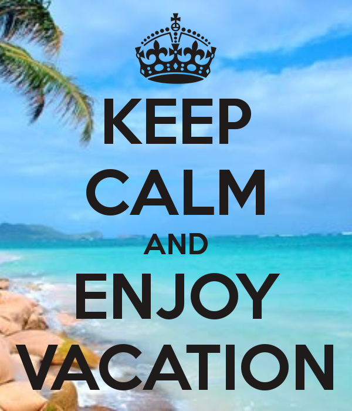

Home
Browse
The Copper Canyons
The Jungle Marathon
The Rio de Janeiro Beachfront
The Patagonian International Marathon
The Two Oceans Marathon
The Table Mountain Crossing
The Comrades Marathon
The Safaricom Marathon
The Tenzing-Hillary Everest Marathon
The Fujisan Marathon
Sources
My Dream Vacation
